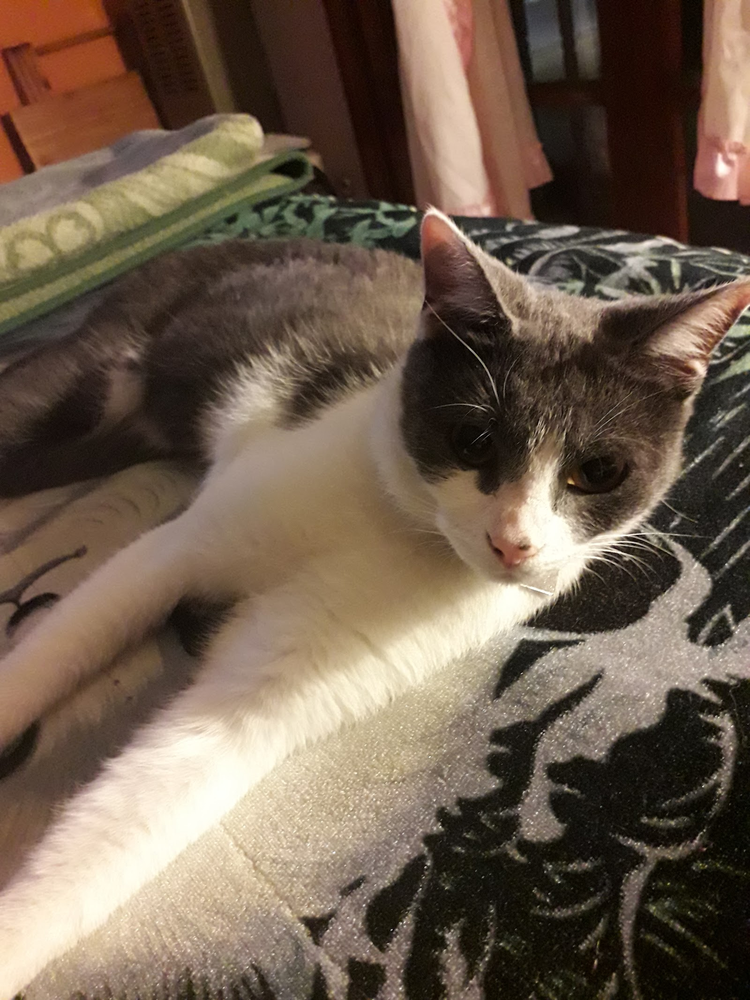
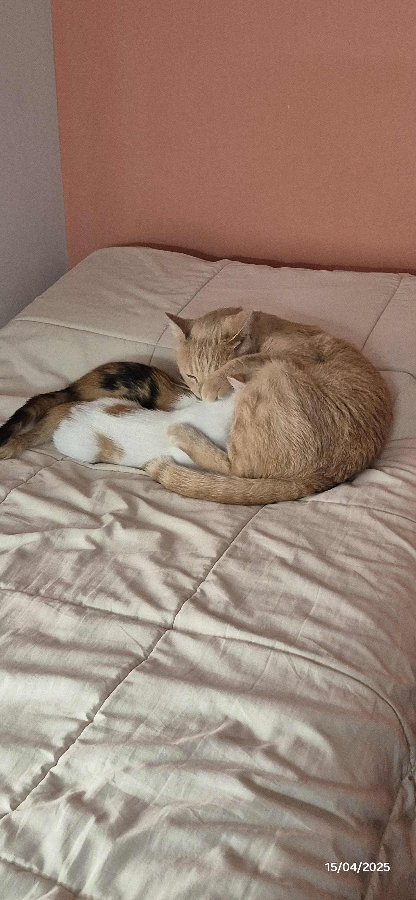
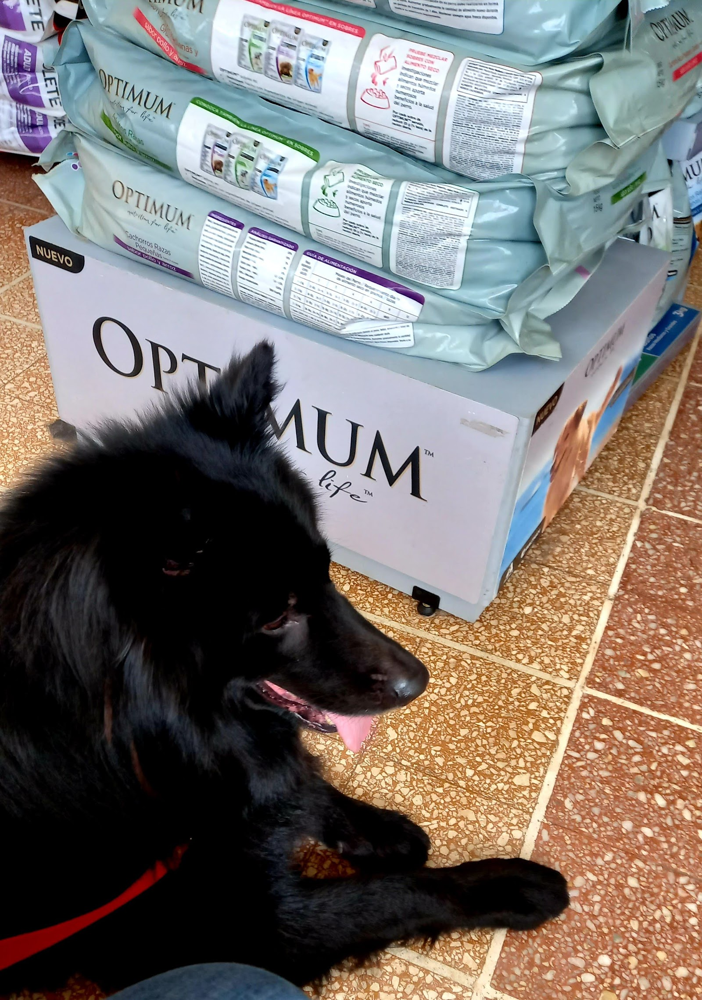

Consultas veterinarias
Atención en el consultorio de Gral. Paz 542, dentro del horario informado.
Veterinaria de barrio · Tandil
Atención veterinaria en Gral. Paz 542, con 4.9 sobre 5 en 165 reseñas de familias tandilenses.

Consultorio de confianza
Cuando una mascota no se siente bien, la primera respuesta tiene que ser humana y clara. En este consultorio el teléfono está a mano, el horario partido queda visible y las familias de Tandil destacan el acompañamiento en los momentos difíciles.
4.9 sobre 5 en 165 reseñas de Google.
Gral. Paz 542 · TandilServicios veterinarios
Consultas, vacunación, desparasitación y seguimiento, con la visita organizada por teléfono.
Atención en el consultorio de Gral. Paz 542, dentro del horario informado.
Llamá para coordinar, sobre todo fuera del horario habitual.
Consultá por teléfono antes de acercarte para organizar la visita.
Acompañamiento para familias que ya confían sus mascotas al consultorio.

Antes de tu visita
4.9 sobre 5 · 165 reseñas
"La atención de Tati y Gisela es simplemente excelente. Siempre están ahí para resolver nuestras dudas y acompañarnos en los momentos más difíciles de ser tutores de nuestras mascotas. Se nota la pasión que ponen en su trabajo, su compromiso y la verdadera vocación que tienen por cuidar a nuestros peluditos."
Simon Salagoity
"Son gente increible, mucha humanidad!!! Excelente atención de todo el grupo que alli trabaja... Mi gatita ya recuperandose y feliz de que ellos la tengan como paciente de ahora en mas!!! Super recomendable!!! Gracias infinitas!!!"
Lore Bértolo
Galería cotidiana
